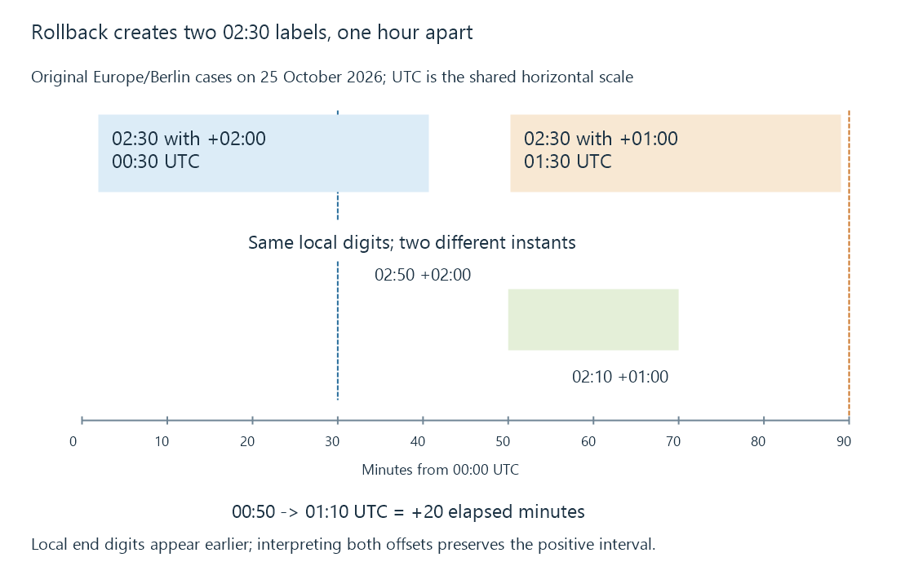

Guide time zones and clock changes
Guide time zones determine how supplied date/time values become absolute instants and local display times, including repeated or missing clock times around daylight-saving changes.
On a clock-change morning, “02:30” can identify two different moments. A guide or recording timer that retains only those clock digits has lost information needed to choose the intended airing.
Consider Europe/Berlin on 25 October 2026. These original XMLTV timestamps have equal local digits and different offsets:
20261025023000 +0200 -> 2026-10-25T00:30:00Z
20261025023000 +0100 -> 2026-10-25T01:30:00Z
The instants are an hour apart. The first belongs to the summer-time occurrence of 02:30; the second belongs to the standard-time occurrence.
Convert each supplied value to an instant
A numeric offset expresses local time minus UTC. To obtain UTC, subtract that offset.
| Supplied date/time | Offset | Interpreted UTC |
|---|---|---|
| 25 October, 02:30 | +02:00 | 25 October, 00:30 |
| 25 October, 02:30 | +01:00 | 25 October, 01:30 |
The offset is part of the supplied value. Discarding it and applying the server’s current zone instead can map both entries to one moment or select the wrong occurrence.
XMLTV has its own timestamp convention: absent an explicit zone, UTC is assumed. That convention must not be replaced with “whatever the server considers local.” Other formats can have different requirements; RFC 3339 timestamps use an explicit offset or Z in their complete form.
The end can look earlier while elapsed time is positive
Take this original interval spanning the same rollback:
start: 20261025025000 +0200 -> 00:50 UTC
stop: 20261025021000 +0100 -> 01:10 UTC
elapsed: 20 minutes
Subtracting the local clock labels would suggest minus forty minutes. Converting both endpoints first gives the correct positive twenty minutes.

The capture system needs elapsed time between instants. A guide display needs the appropriate local label for each instant. Those are related calculations with different inputs.
The same issue affects padding. Adding ten elapsed minutes to an absolute endpoint is straightforward. Adding ten to a bare local label near a transition needs the zone’s rules and a policy for ambiguous or missing results.
Spring creates a missing interval
In Europe/Berlin on 29 March 2026, the local clock advances from 01:59 to 03:00. A bare local time of 02:30 does not occur in that zone on that date.
An offset-bearing value can still identify an instant mathematically. It does not necessarily describe a valid local civil time under the claimed zone rules.
For example, “02:30 with +01:00” resolves to 01:30 UTC, which Berlin displays as 03:30 after that transition. If the author intended Berlin’s wall clock, the supplied label and rules disagree.
A parser accepting the timestamp therefore establishes syntax and offset arithmetic, not that the provider chose a valid civil time for a named zone.
An offset is not a zone rule
+01:00 tells you an offset at a particular instant. Europe/Berlin identifies a set of civil-time rules that can choose different offsets at other instants.
A programme scheduled for the same local clock time next month can consequently have a different UTC time. Carrying today’s offset into every future event loses the transition.
IANA maintains the Time Zone Database as jurisdictions change their rules. Microsoft’s DateTimeOffset and TimeZoneInfo documentation likewise distinguishes an offset-bearing instant from a named zone and its adjustments.
This is also why a recurring “every Monday at 20:00 local” rule differs from “every 168 hours after this instant.” The former follows civil labels; the latter follows elapsed time.
A weekly local rule can have a 169-hour interval
For another original Europe/Berlin example, compare 20:00 local on 18 October and 25 October 2026. Before rollback, the first is 18:00 UTC. After rollback, the second is 19:00 UTC.
The local weekly labels are seven calendar days apart, but their absolute separation is 169 hours. Adding exactly 168 elapsed hours to the first instant reaches 19:00 local on the second date.
A recurring manual timer intended for 20:00 local therefore needs the named-zone rules or separately supplied event instants. Repeating a fixed elapsed interval expresses a different intent.
Programme-based recording instead receives the particular scheduled airing’s time. A bare weekday/time preference in a series rule is an eligibility input; the airing still supplies a concrete instant.
Keep the interpretation stages visible
A useful guide/timer path retains:
- The original supplied timestamp and its declared convention.
- The interpreted absolute instant.
- The interval calculations and recording deadlines.
- The display zone used for the viewer’s local labels.
Server and client can display different local times for the same instant without disagreeing about the recording. Conversely, matching labels on two machines do not prove that they agree about the instant.
Emby’s public timer contract identifies start and end dates in UTC. The timer is therefore easier to assess by comparing interpreted instants with its requested capture interval, rather than comparing only a screenshot’s clock labels.
A constant shift fixes only a constant error
If all events are uniformly two hours late because an importer treated UTC digits as local time, correcting that interpretation addresses the cause.
Applying an extra fixed shift after a correct conversion instead changes every intended instant. It can appear helpful during one offset period and become wrong after a transition.
Compare an affected event’s original value, interpreted UTC and displayed local time. If those are consistent but a recording starts late, acquisition delay or an outdated schedule belongs elsewhere in the explanation.
See Also
- XMLTV listings: channels, programmes and time
- ATSC PSIP: virtual channels, events and time
- Recording timers and acquisition deadlines
- Packet Timestamps
References
- XMLTV: Version-pinned listings DTD and field semantics
- IANA: Time Zone Database
- IANA: Time Zone Database release 2026e
- Microsoft: DateTimeOffset and time-zone rules
- Microsoft: Ambiguous local times
- Microsoft: Invalid local times at a clock transition
- RFC 3339: Internet timestamps and numeric offsets